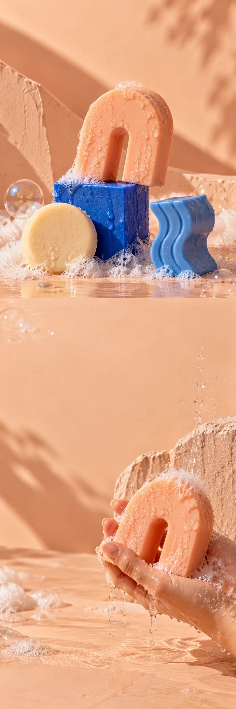

SABO STUDIO
BodycareCollectielancering
OBJECTS FOR EVERYDAY RITUALS
SOAP.
BUT MAKE IT ART.
Ontdek de zeepvormen SABO STUDIO / VAN DICHTBIJ
Een goed
begin van de dag.
Rond, golvend of hoekig. Onze denkbeeldige zeepcollectie geeft het kleinste ritueel in huis een sculpturale draai.
01De boog
02De golf
03De cirkel
Maak iets
moois van gewoon.
Mooi genoeg om neer te zetten. Gemaakt om op te maken.
Ontdek de zeepvormen